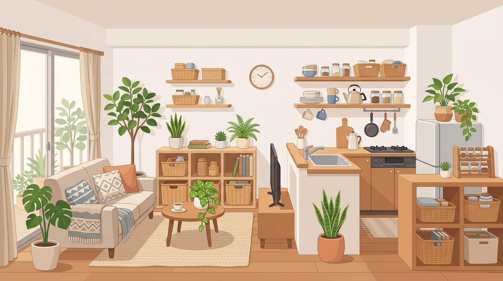
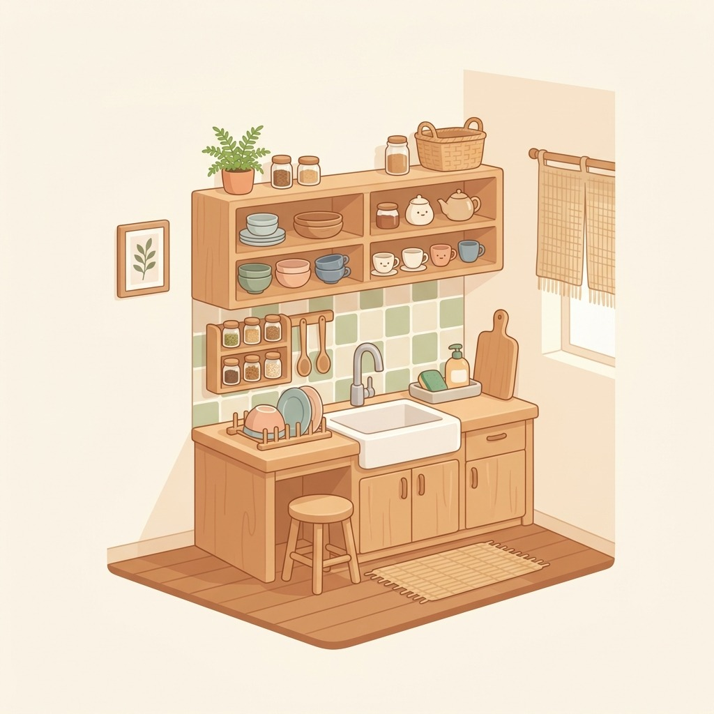
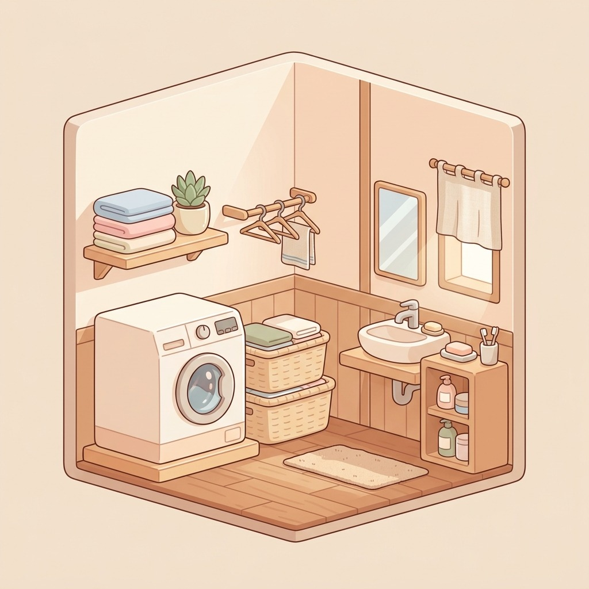
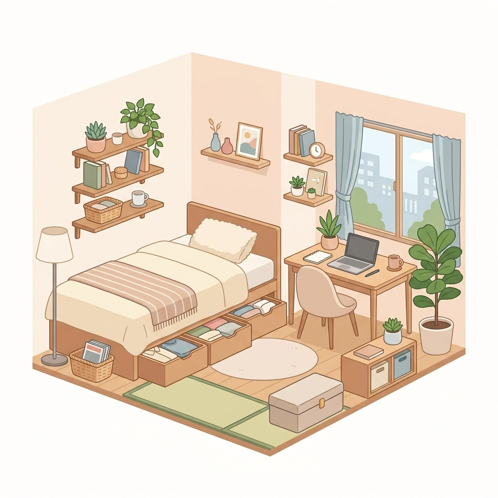
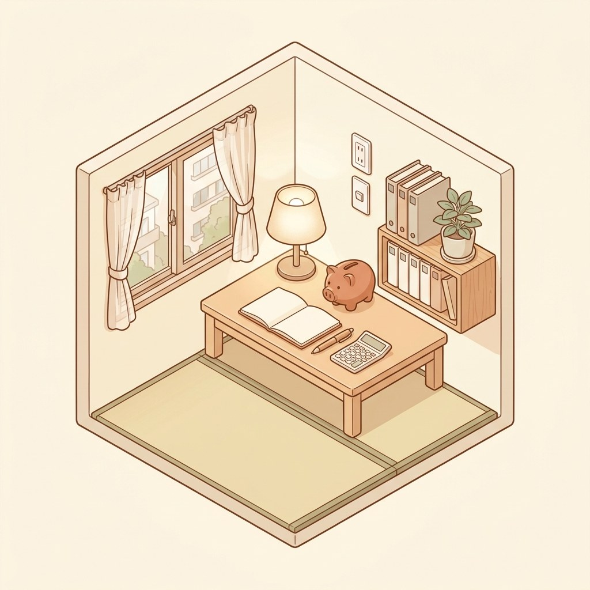

狭い家でも、
すっきり暮らす。
収納・キッチン・洗面所の「困った」を減らすアイデアを、イラストでわかりやすく。毎日 Instagram で更新しています。
カテゴリー

キッチン収納・便利グッズ
シンク下・調味料・冷蔵庫まわり。毎日使う場所を片づけやすく。

洗面所・ランドリー・掃除
洗面所の収納、室内干し、掃除がラクになる工夫。

一人暮らし・狭い部屋のインテリア
ワンルームや狭い部屋を広く使う収納とインテリア。

固定費の見直し
通信費・電気代など、毎月の固定費を見直すヒント。
新着アイデア

洗面所
部屋干しのにおい、干し方で変わる
風の通り道と間隔を整えるだけ
洗面所
部屋干しのにおい、干し方で変わる
風の通り道と間隔を整えるだけ

洗面所
寝具の衣替えでつまずく
洗う・乾かす・しまうを分けて考える

洗面所
部屋干しが乾かない
置き場所と干し方を変えるだけ

キッチン収納
まな板を置く場所がない
作業台を空けるための置き方の見直し

洗面所
お風呂の床、置かない
吊るす・掛けるでぬめり知らず

一人暮らし
壁を使えば床が広がる
賃貸でも穴をあけない壁面収納

一人暮らし
ベッド下、眠らせない
高さ別に分ければ出し入れもラク

キッチン収納
冷蔵庫がぐちゃぐちゃ問題
定位置を決めれば探さない・埋もれない
選び方ガイド
すべて見る見直し
電気料金の明細の見方｜4つの欄で毎月の増減がわかる
電気の明細、合計額だけ見て閉じていませんか。基本料金・電力量料金・燃料費調整額・再エネ賦課金という四つの欄の意味がわかる…
見直し
電力会社を切り替える前に確認すること｜一人暮らし・賃貸の注意点
電気の契約先は自分で選べます。ただ賃貸や集合住宅では前提条件もあります。公的機関の情報をもとに、申し込み前に確かめる点を…
見直し
光回線の乗り換え前に確認すること｜一人暮らしの固定費見直し
光回線の乗り換えは、料金だけを見ると後悔しがちです。契約相手は誰か、元に戻せるか、8日間の制度は使えるか。公的機関の注意…
見直し
光回線とホームルーターの選び方｜一人暮らしの通信費見直し
一人暮らしの家でネット回線を選ぶとき、迷うのが光回線とホームルーター。公的機関が公表している制度や注意点をもとに、自分で…